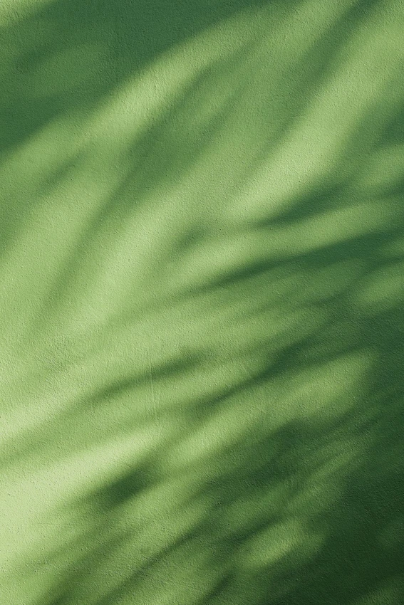
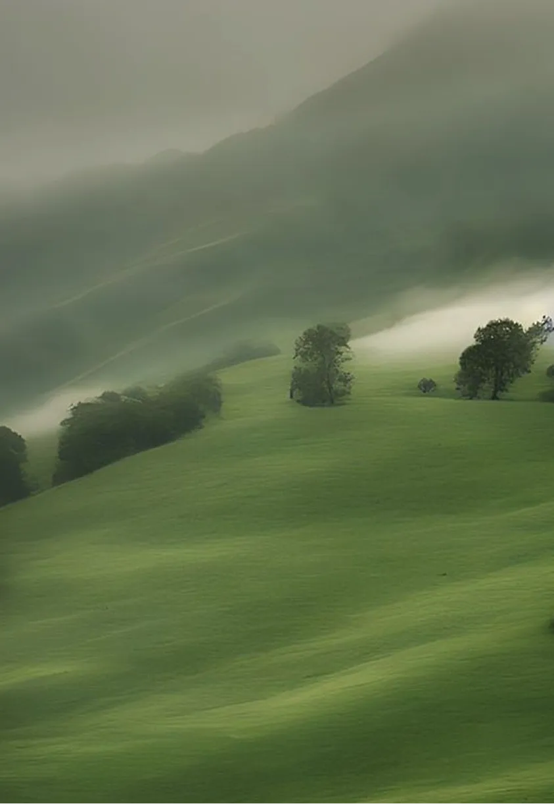
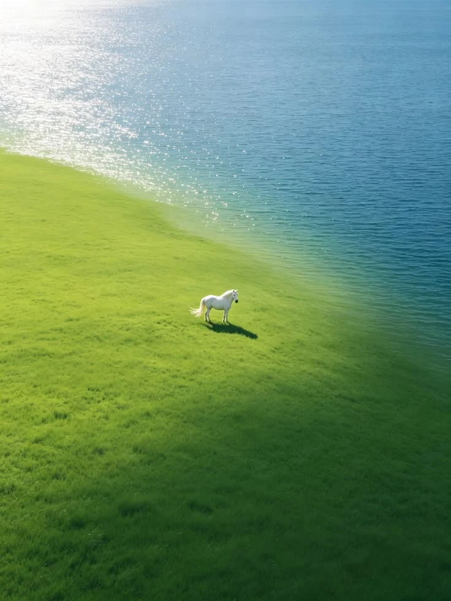
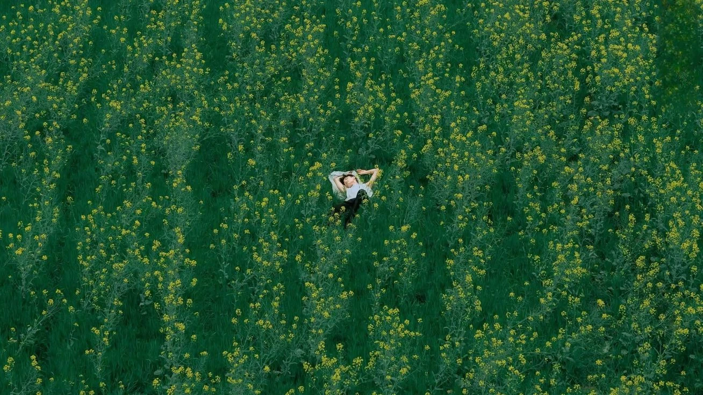
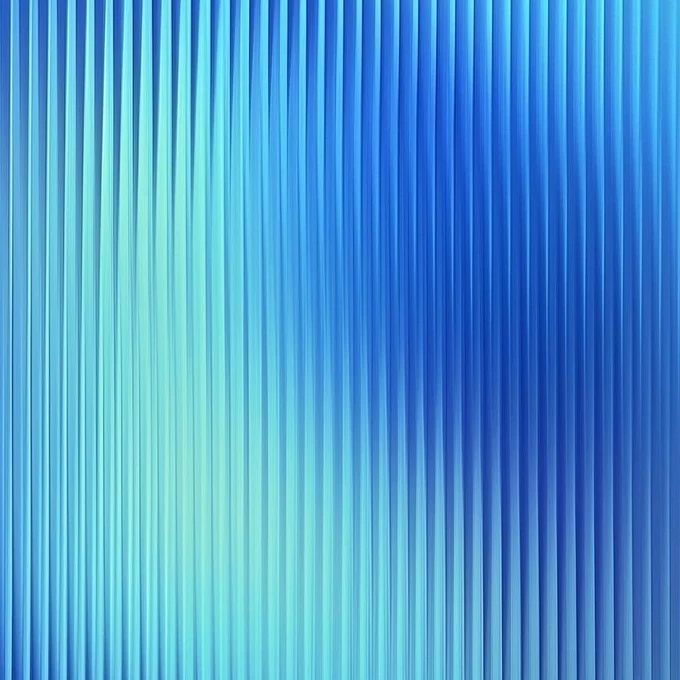

Control UI,
re-recorded.
The floating overlay widgets shown while Screenbolt is actively recording — restyled from Screenity's blue chrome into the landing page's frosted-glass, red-accent, pill-shaped visual language. Every widget is staged over a real backdrop so the glass treatment is testable.
The control bar, front and center.
Anchored to the landing page's Record-card pill layout, but restyled onto dark frosted glass so it reads on both light and dark pages. Pulsing red rec dot, tabular timer, source toggles and the red stop. The paused state swaps the accent to amber and promotes resume.

Mic, camera and screen read as "on" via filled white icons; tapping any toggles it off (icon hollows + red slash). Pause sits closest to the timer for thumb reach.

Paused: amber dot, timer ticks red, and Resume becomes the single primary action. Restart + discard surface as secondary ghost controls only while paused.
Pick a mode from the ring.
Screenity scatters cursor / draw / blur across the main bar and a cramped nested popover. Here they collapse into one "tool" button on the control bar; pressing it fans out a dark-glass radial ring of four modes plus a collapsed collapse affordance.

Draw with intent.
The radial color-and-stroke popover is flattened into a single dark-glass drawer: tools on the left, a live color wheel + eyedropper in the middle, stroke weight on the right. One surface, no hidden second ring to re-open.

Active tool is a solid-white pill; hover states are 10% white. The color wheel is draggable and the eyedropper swatch opens the OS picker.
Shapes, outlined or filled.
Rectangle, circle, triangle — each rendered as an actual shape glyph (not a tool icon), plus a fill/stroke toggle. Selected shape gets a white pill; filled variants fill the glyph.

A small filled/stroke legend below the picker shows the current fill color when a shape is filled.
Brush away the sensitive.
Screenity's blur mode has almost no controls (a select toggle + clear). Here it gets a real brush: size slider, intensity, and clear — with the currently-blurred region shown live through the glass.

The dashed outline shows a region being blurred; the toolbar floats at the bottom where it won't cover the area you're working on.
A little you, floating.
The floating webcam circle keeps its circular crop, but the mini controls move from Screenity's tiny corner chip to a dark-glass handle that docks to the ring's lower-right — flip, picture-in-picture, and close.

Crop to the pixel.
The drag-to-select region keeps its dimmed-outside + dashed-outline mechanic, but the live dimension label becomes a dark-glass chip docked to the box, with confirm/cancel pill actions in place of the current ghost edges.

Quick settings, on the fly.
The settings menu (max resolution, fps, system audio, webcodecs, restore) moves onto dark glass with the landing page's pill toggles and segmented choices — no more white dropdowns that fight the page behind them.

Quiet confirmations.
Toasts become dark-glass pills with a left accent, matching the landing page's floating badges. An optional Esc affordance keeps the current keyboard-escape pattern.

Stop, then ship it.
After stop, a single dark-glass card offers the three next actions — save, edit, share — with the thumbnail of the just-finished recording as the anchor. One tap, no hunt.